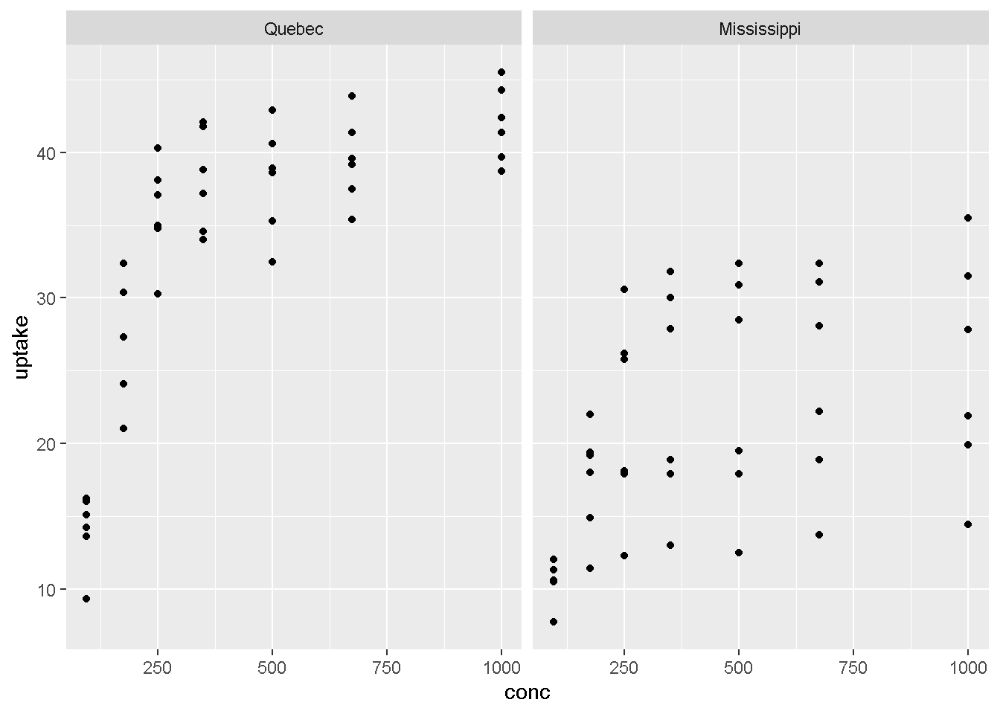

Presentación
Se presentan los gráficos más usados en el análisis de datos, como ser:
- Gráficos de dispersión.
- Gráficos de barras.
- Gráficos de líneas.
- Histogramas.
- Gráficos de cajas.
1 Introducción
Los graficos en el proceso de analisis de datos, son el primer acercamiento con los datos, nos permiten darnos una idea de como se estan comportando estos y reconocer patrones que saltan a la vista como una tendencia o agrupamiento, que despues se ratificara o rechazar empleando modelos mas precisos. Es por esto y mucho mas, que debemos darnos un tiempo prudente en el estudio de los gráficos, y sus mejores practicas.
2 Grafico de disperción
El grafico de diesperión, nos permite representar la relación entre dos variables continuas.
3 Grafico De Barras
Los graficos de barras son utilizado comunmente para representar variables discretas o cualitativas.
4 Grafico De Lineas
Los graficos de lineas nos permiten ver la evolución de una variable atravez del tiempo que es como generalmente se lo utilizar el grafico de lineas.
5 Histograma
Los histogramas se los utiliza comúnmente para visualizar la forma en se distribuyen los datos.
6 Grafico de caja
Los grafico de caja son utilizados para resumir de forma visual un conjunto de datos, los máximos, mínimos, mediana y cuartiles.
6.1 Librerias necesarias
library(gcookbook)
library(reticulate)
library(ggplot2)
library(dplyr)import numpy as np
import matplotlib.pyplot as plt6.3 Grafico de caja en Python
plt.clf()
x=np.array(r.cars["dist"])
plt.boxplot(x)## {'whiskers': [<matplotlib.lines.Line2D object at 0x00000242A629F5B0>, <matplotlib.lines.Line2D object at 0x00000242A6305BE0>], 'caps': [<matplotlib.lines.Line2D object at 0x00000242A63058E0>, <matplotlib.lines.Line2D object at 0x00000242A62BA760>], 'boxes': [<matplotlib.lines.Line2D object at 0x00000242A638F820>], 'medians': [<matplotlib.lines.Line2D object at 0x00000242A62BA220>], 'fliers': [<matplotlib.lines.Line2D object at 0x00000242A62BAB80>], 'means': []}plt.show()7 Nube de palabras
Las nubes de palabras nos permiten visualizar la frecuencia con la que se repite, para poder graficar este tipo de gráficos se necesita dos variables, una que representa las “palabras” y la otra variable que representa su “frecuencia”. Dentro del análisis de datos con R existen paquetes que guardan este tipo de datos.
7.1 Librerias necesarias
library(janeaustenr)
library(tidytext)
library(dplyr)
library(stringr)
library(wordcloud)7.2 Preparación de los datos
books <- austen_books() %>%
group_by(book) %>%
mutate(linenumber = row_number(),
chapter = cumsum(str_detect(text,regex("^chapter [\\divxlc]",ignore_case =TRUE)))) %>%
ungroup()
data("stop_words")
books_words <- books %>%
unnest_tokens(word, text) %>% anti_join(stop_words)8 Introducción
Si bien ya sabemos como generar un grafico, es hora de ver los destalles que puede hacer mas informativo de un grafico, como agregar facetas, y otros que hacen mas informativo a un grafico.
- Anotaciones
- Ejes
- Temas
- Legendas
- Facetas
- Colores en parcelas
9 Anotaciones
Las anotaciones nos permiten dar mas información a los usuarios de grafico, esto es subjetivo, deacuerdo a la audiencia a la que esta dirigida los grafico.
library(reticulate)
library(gcookbook)
library(ggplot2)
library(dplyr)p <- cars %>% ggplot(aes(x=speed, y=dist)) +
geom_point()
p +
annotate("text", x = 10, y = 50, label = "Grupo 1") +
annotate("text", x = 23, y = 100, label = "Grupo 2")
10 Ejes
library(reticulate)
library(gcookbook)
library(ggplot2)
library(dplyr)ggplot(cars, aes(x = speed, y = dist)) +
geom_boxplot()ggplot(cars, aes(x = speed, y = dist)) +
geom_boxplot() +
coord_flip()
12 Leyendas
library(reticulate)
library(gcookbook)
library(ggplot2)
library(dplyr)pg_plot <- ggplot(CO2, aes(x = conc, y = uptake, fill = Plant)) +
geom_boxplot() +
scale_fill_brewer(palette = "Pastel2")
pg_plot +
theme(legend.position = "top")
13 Facetas
Las facetas tienen por objeto segmentar gráficos, en función de una variable categórica.
library(reticulate)
library(gcookbook)
library(ggplot2)
library(dplyr)
14 Colores
library(reticulate)
library(gcookbook)
library(ggplot2)
library(dplyr)ggplot(cars, aes(x = dist)) +
geom_histogram(fill = "red", colour = "black")ggplot(cars, aes(x = speed, y = dist)) +
geom_point(colour = "red")15 Introducción
En esta sección se presentara la ficha tecnica de los marcos de datos que se utilizan en el libro, describiendo el contextos de base de datos y significado de cada variable.
16 Coches
16.1 Descripción
Los datos corresponden a la velocidad de los automóviles y las distancias necesarias para detenerse.teniendo en cuenta que los datos se registraron en la década de 1920.
16.2 Variables
16.4 Datos
| speed | dist |
|---|---|
| 4 | 2 |
| 4 | 10 |
| 7 | 4 |
| 7 | 22 |
| 8 | 16 |
| 9 | 10 |
| 10 | 18 |
| 10 | 26 |
| 10 | 34 |
| 11 | 17 |
| 11 | 28 |
| 12 | 14 |
| 12 | 20 |
| 12 | 24 |
| 12 | 28 |
| 13 | 26 |
| 13 | 34 |
| 13 | 34 |
| 13 | 46 |
| 14 | 26 |
| 14 | 36 |
| 14 | 60 |
| 14 | 80 |
| 15 | 20 |
| 15 | 26 |
| 15 | 54 |
| 16 | 32 |
| 16 | 40 |
| 17 | 32 |
| 17 | 40 |
| 17 | 50 |
| 18 | 42 |
| 18 | 56 |
| 18 | 76 |
| 18 | 84 |
| 19 | 36 |
| 19 | 46 |
| 19 | 68 |
| 20 | 32 |
| 20 | 48 |
| 20 | 52 |
| 20 | 56 |
| 20 | 64 |
| 22 | 66 |
| 23 | 54 |
| 24 | 70 |
| 24 | 92 |
| 24 | 93 |
| 24 | 120 |
| 25 | 85 |